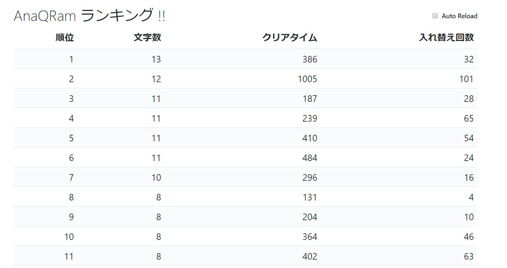

Elm × Haskell × Kotlin で Android + Web アプリケーションを作った
ちょっと珍しい組み合わせでアプリを作ったので，そのメモ．
いきさつ
去年，母校の学園祭用に AnaQRam という Android アプリ(ゲーム)を Java で作った． 今年，このアプリを
- Kotlin に変換
- サーバーサイドにスコアランキングを追加
- データを DB で管理
することにした． サーバーサイドは Haskell の Servant で組み立てて，ランキングを表示する Web ページを Elm で書く．
結果，Elm × Haskell × Kotlin という珍しい組み合わせのプロジェクトが出来上がった(笑)
最終的なリポジトリはココ．
作る
AnaQRam
AnaQRam というアプリについて少しだけ説明すると，子供(小学校低学年以下)でも遊べる簡易的なゲームで，基本的には所謂アナグラムというパズル． ただ，そのパズルのピース(文字)をQRコードをスキャンして集める必要がある．
Kotlin に変換
実はすごい簡単． Android Studio のナビゲーションメニューにある Convert Java File to Kotlin File をクリックするだけで 概ね完了する．
しかし，恐らくこんな感じのエラーが出る．
Error:(24, 20) Type mismatch: inferred type is Array<CharBox?> but Array<CharBox> was expectedだいたい Nullable のせい． Kotlin では null をとり得る任意の型 A は A? と書く必要がある．
ラムダ式の無い Java で配列を動的に初期化するには以下のように書くしかなかった(Javaマスターでは無いので実は裏技があったかも)．
private CharBox[] getCurrentCharBoxes() {
CharBox[] current = new CharBox[buttons.length];
for (int i = 0; i < buttons.length; i++)
current[i] = charBoxes.get(buttons[i]);
return current;
}これの自動変換は以下のようになる．
private val currentCharBoxes: Array<CharBox>
get() {
val current = arrayOfNulls<CharBox>(buttons.size)
for (i in buttons.indices)
current[i] = charBoxes[buttons[i]]
return current
}返り値は Array<CharBox> となっているが，arrayOfNulls<CharBox>(size) が返す型は Array<CharBox?> なのである(null で埋めた配列を返してるせい)． ここで，返り値の型を Array<CharBox?> としてもエラーは消える(しわ寄せされる)．
ラムダ式とかでうまく置き換えても良いが，取りあえずはこれでゴリゴリエラーを消していった．
あとは，Nullable でない引数に Nullable な変数を渡す場合には変数の前に ? を書き足す必要がある(? は null が返ってきた場合には以降を実行ぜず null を返す)．
charBoxes = HashMap(buttons.size)
for (i in buttons.indices) {
// charBoxes.put(buttons.get(i), cbs[i])
buttons[i]?.let { charBoxes.put(it, cbs[i]) }
}最悪 !! を変数の前に書き足すことで全部無視できる(!! は null の例外が返ること許容する)．
// CharBoxMapper(activity: Activity, charBoxes: Array<CharBox?>)
// gameManager.getCharBoxes() は Nullable
charBoxMapper = CharBoxMapper(this, gameManager!!.getCharBoxes())ホントは全部 !! を足すだけで良かったりする．
Kotlin らしく
Kotlinマスターでも無いので「Kotlin らしさ」なんてわからないけど，とりあえず便利そうなモノだけでも使ってみた．
ラムダ式を使う
Java でもできるんだけど，Android のバージョンの関係で，Java8 が使えない． しかし，Kotlin は JDK6 をサポートしてるため，Android のどのバージョンでも動く(らしい)．
Which versions of Android does Kotlin support? All of them! Kotlin is compatible with JDK 6, so apps with Kotlin safely run on older Android versions.
なので，ラムダ式やら高階関数が使い放題で大助かりだ．
スコープ関数を使う
Kotlin 1.1 で追加された関数群らしい．
コレらを使うと，いい感じにメソッドチェーンが書ける．
Toast(this)
.apply { setGravity(Gravity.CENTER, x, y) }
.apply { duration = Toast.LENGTH_LONG }
.also { toast ->
toast.view = TextView(this)
.also {
it.text = message
it.textSize = 50f
it.setTextColor(Color.WHITE)
it.setBackgroundColor(ContextCompat.getColor(this, R.color.colorPrimary))
}
}.show()サーバーサイドプログラムを書く
Haskell Servant で API サーバーを立てて，Elm で Web UI を作る． この組み合わせは前に記事にした．
実はこのときに作ったプログラムを改良しただけ． Todo 型を Score 型とし，API を GET と POST だけにした．
data Score = Score
{ textLength :: Int
, clearTime :: Int
, swapCount :: Int
} deriving (Generic, Show)
type CRUD = "scores" :> Get '[JSON] [Score]
:<|> "scores" :> ReqBody '[JSON, FormUrlEncoded] Score :> Post '[JSON] ScoreElm は頑張って書いてこんな感じのデザインにした．

意外と機能があって
- 1分毎ごとに自動更新するかのチェックボックス
- 「文字数」とか「クリアタイム」とかをクリックするとそれを最優先にしてソート
- 「AnaQRam ランキング!!」をクリックするとソートの優先度を保持したまま更新
このときのリポジトリツリーはコレ．
あと，今回で初めて気づいたのアだが，愛用している Primer CSS が cdnjs にあがっていた． これで，CSS のリポジトリじゃなくなる．
GKE にデプロイする
Google Container Registry に，このサーバーサイドプログラムのイメージをあげて，そこから Google Container Engine にデプロイする．
Haskell Stack には Docker Intagration という機能があって，このおかげで簡単にプロジェクトのイメージを作成できる．
(この辺りの定義は曖昧なので間違ってるかもしれないけど) Docker Integration の機能は主に２つ．
- 任意の Docker イメージをベースにして
stack buildやstack execを行える stack image containerというコマンドでstack build生成されるバイナリを含んだ Docker イメージを生成する
いちいち Docker を起動してゴニョゴニョして Docker イメージを作る必要が無いので便利． 問題は極めてドキュメントが少ない点． とくに image container の公式ドキュメントはほぼない．
- 参考:
stack.yaml に次のように書くと，fpco/stack-build をベースイメージにして，config, data, script, static ディレクトリを生成するイメージの対応するディレクトリにコピーして，entrypoint.sh を実行する Docker イメージが stack image container で出来上がる．
image:
container:
name: "anaqram"
base: "fpco/stack-build"
add:
config: /app/config
data: /app
script: /usr/local/bin/
static: /app/static
entrypoints: ["entrypoint.sh"]あとは，このイメージのタグを GCR のモノに変えて，gcloud docker push するだけ．
GKE の設定は Google CLoud のコンソールから めちゃくちゃ適当に やった． ちゃんと YAML にしていないので，いずれやらないと… kubernetes は要素が多くて難しい…
適当にやっても，簡単なものならデプロイできちゃうのはすごいけど．
DB の追加
上記まででは，集計したスコアデータをただの配列で保持していた． つまりプログラムが落ちるとすべて消える． なので，Google Cloud SQL と連携して，スコアデータを外部に保存することにした．
Haskell の ORM みたいなパッケージには Persistent を使うことにした． Persistent は Template Haskell を利用して任意の型に対し簡単に型安全な ORM を定義してくれる，かなり強力なパッケージである．
share [mkPersist sqlSettings, mkMigrate "migrateAll"] [persistLowerCase|
ScoreData
textLength Int
clearTime Int
swapCount Int
deriving Show
|]と書くだけで，Migration や insert や select をする関数を自動生成してくれる．
ただ，すでにある型(Score 型)に対し，それらの関数を自動生成する方法がわからなかった． なので，上記の ScoreData 型と元の Score 型を相互変換する関数を用意して補った．
もちろんもっと良い方法はあると思う．
ちなみに，このパッケージは 悪名高い 最強の Haskell 製 Web フレームワーク Yesod の一部らしい． なので，こんなちっぽけなプログラムに使うには強力すぎるか？とも思ったが，他に良さげなのが見つからなかったので使った．
Cloud SQL と GKE の接続
チュートリアルにある，Cloud SQL Ploxy を参考に設定した． しかし，このとおりにやってもうまくいかず
couldn't connect to "****:asia-northeast1:****": Post https://www.googleapis.com/sql/v1beta4/projects/*****/instances/****/createEphemeral?alt=json: oauth2: cannot fetch token: Post https://accounts.google.com/o/oauth2/token: dial tcp: i/o timeoutと言った感じのエラーがログに書き出される． イロイロ試した結果，Deployment のインスタンスの設定に hostNetwork: true を追加したらうまく動いた．
ここが一番時間かかった…インフラ系は苦手です…
完成
ちなみに，21日に，これを Nexus7 にインストールして実際に子供たちに遊んでもらってきた． まぁあんまりランキングの効果は無かったけど(笑) 作るの楽しかったからこれで良いのです．
その時の改善点を AnaQRam リポジトリの Issue に書き出した． GitHub 便利ですね．
思うところ
Elm はやっぱり楽だ． Web UI とか全然できなかったんだけど，いいサブウェポンができた気分．
Kotlin は良くできてると思うが，Nullable はなんというか… ボクは Optional や Maybe の方がいいと思うんだけどなぁ． 古い Java で Android アプリを書くぐらいなら Kotlin を使うべきと感じた．
Haskell もなんの問題も無くサクッと書けた． Servant も Persistent も中身は複雑だが，軽く使う分には簡単に使える． すごい巨人の肩に乗ってる気分だけど．
おしまい
実は，Kotlin の API を叩くクラスも Haskell から自動生成している． 次回はそのことについてまとめようかな．